258 — Triage de red, cómputo, datos y dependencias
Parte: 21 — Operación cloud, automatización y respuesta a incidentes
Nivel: avanzado · Horas estimadas: 4
Laboratorio: incident · Estado: EXECUTABLE_CORE
🎯 Propósito
Diagnosticar bajo presión con un método, en vez de con intuición. La clase da el orden de descarte que resuelve la mayoría de los casos en minutos, las preguntas que discriminan por capa —red, cómputo, datos y dependencias—, y las trampas de razonamiento que alargan los incidentes: quedarse con la primera hipótesis, confundir correlación con causa y no comprobar lo que se da por sabido.
📚 Resultados de aprendizaje
Al finalizar podrás:
- Aplicar un orden de descarte que no dependa de la intuición.
- Discriminar por capa con preguntas que separan causas.
- Usar la línea de cambios como primera hipótesis, siempre.
- Evitar las trampas de razonamiento que alargan los incidentes.
- Decidir cuándo mitigar sin haber entendido la causa.
🧩 Conceptos centrales
| Concepto | Comprensión verificable |
|---|---|
triaje |
Clasificar rápido el alcance y la capa afectada antes de investigar en profundidad. |
línea de cambios |
Registro de qué se ha desplegado, configurado o modificado, con hora. La primera hipótesis. |
descarte |
Eliminar capas con una comprobación barata, en vez de buscar la causa directamente. |
mitigar |
Restablecer el servicio sin haber entendido la causa. Casi siempre lo correcto primero. |
sesgo de la primera hipótesis |
Quedarse con la primera explicación plausible y buscar solo pruebas que la apoyen. |
correlación temporal |
Que dos cosas ocurran a la vez. Es una pista, no una causa. |
🧠 Modelo mental
Operar es controlar cambios bajo incertidumbre: inventario, señal, diagnóstico, acción reversible y aprendizaje deben formar un ciclo cerrado.
Aplicado a esta clase, separa siempre cuatro planos: intención (qué necesita el usuario), configuración (qué declaramos), estado observado (qué existe de verdad) y evidencia (cómo sabemos que cumple). Confundirlos produce diseños que se ven correctos en un diagrama pero fallan al operar.
🗺️ Flujo de razonamiento

📖 Desarrollo
1. El orden de descarte
Bajo presión, la intuición lleva a mirar donde uno sabe mirar, no donde está el problema. El orden lo evita.
1 ALCANCE
¿a quién afecta? ¿a todos, a una región, a un tipo de
usuario, a un cliente?
¿desde cuándo, exactamente?
¿es total o parcial?
→ y el alcance ya descarta capas enteras
todos, de golpe → algo global: cambio,
dependencia común, red
una región → esa región
un porcentaje estable → una parte de las réplicas
un cliente → sus datos o su configuración
2 ¿QUÉ CAMBIÓ?
la línea de cambios, en la ventana anterior
→ despliegues, configuración, banderas, políticas,
rutas, certificados, cuotas
→ y también cambios de OTROS: proveedores, socios,
equipos vecinos
→ esta es la primera hipótesis SIEMPRE
→ y en la mayoría de los incidentes, la última también
3 DESCARTAR POR CAPA, con comprobaciones baratas
→ y en el orden en que el tráfico las atraviesa
4 Y EN PARALELO, MITIGAR
→ no se espera a entender para restablecer
Y por qué la línea de cambios va antes que cualquier otra cosa:
la mayoría de los incidentes los causa un cambio
un despliegue clase 102
una configuración clase 232
un certificado que caduca clase 196
una política nueva clase 217
una ruta clase 194
una cuota que se alcanza clase 217
o un cambio de un tercero clase 188
→ y si hay un cambio coincidente, revertirlo es más rápido
que entender
→ y si al revertir se arregla, la hipótesis queda
confirmada
Y lo que hace posible ese paso:
UNA LÍNEA DE CAMBIOS ÚNICA, de todas las fuentes
despliegues, infraestructura, banderas, políticas,
cambios manuales
→ y de todos los equipos
→ y si cada equipo tiene la suya, este paso no se puede
dar clase 122
→ es de las cosas más baratas de montar y de las que más
tiempo ahorran
Y cuándo mitigar sin entender:
CASI SIEMPRE
revertir, desviar tráfico, reiniciar, escalar capacidad,
desactivar una función
→ el servicio vuelve y la investigación sigue en calma
CUÁNDO NO
si mitigar destruye la evidencia que hace falta
→ entonces se captura primero: registros, volcados,
estado clase 202
y si mitigar puede empeorar: un reinicio que pierde datos
en memoria
→ y la decisión de mitigar la toma quien coordina, no quien
investiga clase 257
2. Discriminar por capa
Cada capa tiene una pregunta que la descarta con poco esfuerzo. El orden es el del recorrido del tráfico.
RED clase 202
¿llega la petición al destino?
→ registros de flujo: ¿aceptada o rechazada?
¿qué ruta se aplica?
→ comprobación de siguiente salto
¿resuelve el nombre, y a qué?
→ y desde LA RED que importa clase 195
¿es simétrico el camino?
firma característica
funciona en un sentido asimetría + cortafuegos
funciona a ratos dos caminos, uno roto
todo a la vez y de golpe sesión BGP o cuota
lo pequeño sí y lo grande no MTU clase 198
CÓMPUTO
¿el proceso está vivo y responde?
¿cuántas instancias sanas hay frente a las esperadas?
¿se reinició? ¿por qué?
→ memoria, comprobación de salud, expulsión
clases 213, 221
¿está estrangulado por cuota o por límite?
→ y aquí la CPU del nodo engaña clase 213
firma característica
latencia alta con recursos ociosos límite o
estrangulamiento
reinicios silenciosos memoria
p99 malo y p50 bien una réplica
degradada
DEPENDENCIAS clase 185
¿responden? ¿y con qué latencia?
¿alguna responde LENTO en vez de fallar?
→ el fallo gris, que la redundancia no cubre
¿se agotó algún grupo de conexiones o de puertos?
clases 207, 221
¿hay reintentos multiplicando la carga? clase 201
DATOS clase 243
¿los datos son correctos, o solo están?
¿cambió la distribución? ley 29
¿hay un flujo parado?
¿un despliegue cambió un esquema?
CARGA
¿cambió el tráfico? ¿en volumen o en FORMA?
¿hay un cliente nuevo, un rastreador, un bucle de
reintentos?
¿estamos cerca del codo? clase 186
Y la regla que ordena el uso de herramientas:
de lo barato a lo caro clase 202
paneles y señales agregadas
registros de flujo y consultas guardadas
trazas del periodo
registros de las trazas
y solo entonces, captura o perfilado
→ y empezar por lo caro es el error más común bajo presión
3. Las trampas de razonamiento
La mayoría de los incidentes largos no lo son por falta de datos: lo son por errores de razonamiento.
1 QUEDARSE CON LA PRIMERA HIPÓTESIS
se encuentra una explicación plausible y se busca solo
lo que la confirma
→ y si es falsa, se pierden horas
la corrección
escribir DOS hipótesis alternativas antes de investigar
y decir qué observación distinguiría entre ellas
→ «si es A, veremos X; si es B, veremos Y»
2 CONFUNDIR CORRELACIÓN CON CAUSA
«empezó justo cuando desplegamos» es una pista fuerte
→ y a veces el despliegue solo hizo visible algo que ya
estaba
la corrección
revertir y comprobar
→ si al revertir se arregla, la relación es causal
→ si no, la hipótesis era falsa y hay que soltarla
3 NO COMPROBAR LO QUE SE DA POR SABIDO
«eso no puede ser, lo cambiamos la semana pasada»
«esa alerta funciona»
«ese servicio no lo usa nadie»
→ y este programa ha demostrado las tres falsas
clases 179, 211, 253
la corrección
comprobar lo barato, aunque parezca obvio
→ 30 segundos de comprobación frente a una hora de
suposición
4 BUSCAR DONDE UNO SABE MIRAR
quien sabe de red mira la red; quien sabe de bases,
la base
→ y el orden de descarte lo evita
5 ASUMIR UNA SOLA CAUSA
los incidentes grandes suelen tener dos o tres cosas a
la vez
→ una que degrada y otra que impide detectarlo
→ y arreglar una y ver que sigue mal desconcierta
6 Y NO PARAR A PENSAR
tras 20 minutos sin avanzar, seguir probando cosas es
peor que parar 3 minutos y reordenar
→ y quien coordina es quien debe forzar esa pausa
clase 257
Y una técnica que funciona muy bien y cuesta nada:
DECIR EN VOZ ALTA LO QUE SE ESTÁ HACIENDO
«voy a comprobar si la petición llega al destino»
«esperaba ver X y veo Y»
→ obliga a explicitar la hipótesis
→ permite que otro detecte el error
→ y produce la línea de tiempo sin esfuerzo clase 257
Y la pregunta que desatasca más incidentes:
«¿QUÉ ESTAMOS DANDO POR SUPUESTO?»
→ y comprobar lo primero que salga
y la segunda
«¿QUÉ OBSERVACIÓN NOS HARÍA CAMBIAR DE IDEA?»
→ si no hay ninguna, la hipótesis no es útil
4. Los casos difíciles
Algunos patrones no ceden al orden normal y conviene reconocerlos.
INTERMITENTE
falla el 3 % de las veces, sin patrón aparente
→ casi siempre es UNA de N: una réplica, una zona, un
nodo, un camino clases 196, 202
→ y la forma de encontrarlo es agrupar por dimensión
¿todas las peticiones fallidas van a la misma
instancia? ¿a la misma zona? ¿al mismo destino?
LENTO EN VEZ DE ROTO
el fallo gris clase 185
→ nada da error; los percentiles altos se degradan
→ y la redundancia no lo cubre: el destino sigue «sano»
→ lo detecta la expulsión de atípicos y el reparto por
conexiones en vuelo clase 196
CÍCLICO
ocurre a la misma hora, o cada N horas
→ un trabajo programado, una rotación, una caducidad,
una renegociación clase 198
→ y la pregunta es «¿qué ocurre con esa periodicidad?»
EMPEORA CON EL TIEMPO
una fuga: memoria, conexiones, ficheros, hilos
→ y el síntoma es que reiniciar lo arregla temporalmente
→ si reiniciar arregla, es una fuga hasta que se
demuestre lo contrario
SOLO EN PRODUCCIÓN
volumen, datos reales, concurrencia, o una diferencia de
configuración clase 104
→ y la primera comprobación es la diferencia de
configuración entre entornos
Y SOLO PARA UN CLIENTE
sus datos, su configuración, su volumen o su clave de
partición clases 208, 223
Cuando no se encuentra, que también ocurre:
si el servicio está restablecido y no se encuentra la
causa
se documenta lo que se descartó
se añade la señal que habría ayudado clase 238
y se cierra, con la investigación abierta
→ y eso es mejor que mantener a todo el equipo horas
buscando con el servicio ya funcionando
→ y peor que no hacerlo: el problema volverá
Y lo que hay que dejar preparado para el siguiente:
la consulta que se acabó usando, GUARDADA clase 238
la señal que faltaba, añadida
el procedimiento actualizado con lo aprendido
y el caso, añadido a las pruebas negativas si procede
clases 216, 250
→ y así el triaje siguiente es más corto
Y la lista de comprobación de la clase:
☐ hay línea de cambios única, de todas las fuentes
☐ el triaje empieza por alcance y por «¿qué cambió?»
☐ el descarte sigue el recorrido del tráfico
☐ se usa la herramienta barata antes que la cara
☐ se mitiga en paralelo, sin esperar a entender
☐ se captura evidencia antes de mitigar si hace falta
☐ se escriben dos hipótesis y qué las distinguiría
☐ se comprueba lo que se da por sabido
☐ se dice en voz alta lo que se está haciendo
☐ se para a reordenar si no se avanza en 20 minutos
☐ los intermitentes se agrupan por dimensión
☐ si reiniciar arregla, se investiga como fuga
☐ cuando no se encuentra, se documenta lo descartado
☐ la consulta usada se guarda y la señal que faltaba se
añade
Y el cierre que enlaza con la clase siguiente: cuando el diagnóstico y la respuesta se repiten, escribirlos no basta: hay que poder ejecutarlos. Procedimientos ejecutables y remediación automática es la materia de la clase 259.
🔬 Ejemplo trabajado
Cuatro incidentes de CloudShop, resueltos con el método. Lo que sigue es el que se resolvió en cuatro minutos por la línea de cambios, el que costó tres horas por quedarse con la primera hipótesis, y el intermitente que resultó ser una de doce.
Incidente 1 · Cuatro minutos, por la línea de cambios.
03:14 alerta: presupuesto de error del flujo de compra
consumiéndose 14 veces más rápido
03:14 ALCANCE
todos los usuarios, de golpe, desde las 03:02
→ algo global
03:15 ¿QUÉ CAMBIÓ?
línea de cambios, ventana 02:45-03:05
02:58 despliegue del servicio de precios
03:01 cambio de una regla del cortafuegos
03:03 rotación programada de un certificado
03:16 tres candidatos; el cambio del cortafuegos es el más
coincidente con las 03:02
03:17 se revierte el cambio del cortafuegos
03:18 restablecido
tiempo total 4 min
y la confirmación
la regla nueva denegaba el tráfico hacia el servicio de
precios desde una subred creada la semana anterior
clases 219, 231
Y la observación:
sin la línea de cambios unificada, el equipo habría
empezado por el despliegue de precios, que también
coincidía
→ y habría revertido lo que no era
→ la hora exacta del cambio fue lo que discriminó
clase 122
Incidente 2 · Tres horas, por la primera hipótesis.
11:20 el listado de catálogo con p99 de 4.100 ms
el p50, normal
11:22 primera hipótesis: «la base está lenta»
→ alguien había visto la CPU de la base al 71 %
11:22-13:40 se investiga la base
se revisan consultas lentas nada anómalo
se añade una réplica de lectura no mejora
se revisan índices correctos
se sube el tamaño de la instancia no mejora
13:45 alguien pregunta: «¿todas las peticiones lentas van
a la misma instancia?»
13:47 se agrupa por instancia
→ el 100 % de las peticiones lentas iba a 1 de las
12 instancias del servicio
13:50 esa instancia tenía un disco degradado
13:52 retirada; p99 a 240 ms
tiempo total 2 h 32
tiempo desde la pregunta correcta 7 min
Y el análisis posterior:
la CPU de la base al 71 % era su valor NORMAL en esa hora
→ correlación tomada por causa
→ y nadie comprobó si era anómala clase 122
y la pregunta que faltó al principio
«¿el fallo es de todas las instancias o de una?»
→ que es la pregunta del intermitente y del p99 malo con
p50 bueno clase 196
correcciones
el panel de servicio muestra el p99 POR INSTANCIA
y se añadió expulsión de atípicos clase 196
→ esa combinación habría resuelto el caso sola
Incidente 3 · El intermitente.
síntoma entre el 2 % y el 4 % de las llamadas al servicio
de inventario fallaban por plazo
sin patrón horario, desde hacía 9 días
el método
se agruparon las peticiones fallidas por cada dimensión
disponible
por instancia de origen repartido
por instancia de destino repartido
por zona de origen repartido
por zona de DESTINO 41 % en una zona
por nodo repartido
por partición de la base repartido
por CLIENTE repartido
→ una zona concentraba el 41 % de los fallos con el 33 %
del tráfico
y dentro de esa zona
por instancia de destino 1 de 4 concentraba el
94 % de los fallos de
la zona
→ una de doce instancias, en una zona
→ su comprobación de salud pasaba porque respondía al
punto de vida clase 196
→ y su punto de listo no comprobaba la base
tiempo de diagnóstico con el método 22 min
tiempo que llevaba abierto 9 días
Y la lección:
los intermitentes casi siempre son UNA DE N
→ y agrupar por cada dimensión disponible es mecánico
→ y se puede dejar como consulta guardada clase 238
Incidente 4 · Dos causas a la vez.
16:40 el procesamiento de pedidos se detiene
16:42 ALCANCE: total, desde las 16:31
16:43 ¿QUÉ CAMBIÓ? nada en la ventana
16:45 DESCARTE POR CAPA
¿llega la petición? sí
¿el proceso responde? sí
¿dependencias? la cola no entrega
clase 237
16:50 la cola tenía 41.000 mensajes sin confirmar
y el consumidor estaba parado
16:52 se reinicia el consumidor
16:54 empieza a consumir; se restablece
17:10 y vuelve a pararse
17:12 segunda hipótesis: hay algo que lo para
→ un mensaje con un campo que el consumidor no maneja
→ y ese mensaje bloqueaba la clave de ordenación
clase 237
17:20 el mensaje se aparta; el consumo se normaliza
y la SEGUNDA causa
¿por qué nadie se enteró a las 16:31?
→ la alerta de antigüedad de la cola existía
→ con umbral de 24 horas ley 15
→ y llevaba 9 minutos cuando el negocio lo notó
→ dos cosas: una que rompió y otra que impidió detectarlo
→ arreglar la primera y ver que volvía a pasar fue lo que
llevó a la segunda
Lo que quedó montado tras los cuatro:
LÍNEA DE CAMBIOS ÚNICA
despliegues, infraestructura, banderas, políticas, rutas,
certificados y cambios manuales clases 122, 232, 256
→ en un solo sitio, con hora
CONSULTAS GUARDADAS de triaje
«agrupar peticiones fallidas por cada dimensión»
«cambios en la última hora»
«instancias sanas frente a esperadas»
«dependencias y su latencia»
«¿hay algún flujo parado?»
→ enlazadas desde los procedimientos clase 257
PANELES POR INSTANCIA, no solo agregados
→ el p99 agregado ocultaba una de doce
Y LA PLANTILLA DE TRIAJE
alcance · qué cambió · descarte por capa · dos hipótesis
· qué las distingue
→ escrita, y usada en cada incidente
El efecto, en los 6 meses siguientes:
```text antes después tiempo medio hasta la hipótesis correcta 52 min 8 min incidentes resueltos revirtiendo un cambio n/d 11/19 tiempo medio hasta mitigar 1 h 20 14 min incidentes con más de una causa n/d 4/19 detectados los dos n/d 4/4 intermitentes abiertos más de 2 días 3 0 incidentes en que se empezó por captura 6 0 de paquetes
Y una cifra que el equipo destacó:
```text
de 19 incidentes, 11 se resolvieron revirtiendo un cambio
en menos de 15 minutos
→ el 58 %
→ y todos ellos habrían sido investigaciones largas sin la
línea de cambios
La lección que esta clase deja: el incidente que se resolvió en cuatro minutos y el que costó dos horas y media tenían la misma dificultad técnica: la diferencia fue preguntar «¿qué cambió?» y «¿es una de N?» antes de investigar. Y en el que llevaba nueve días abierto, agrupar por cada dimensión disponible —una tarea mecánica de veintidós minutos— encontró una instancia de doce cuya comprobación de salud pasaba porque solo miraba si el proceso estaba vivo.
🧪 Laboratorio guiado
Ejecuta desde la raíz:
python classes/part-21-cloud-operations-automation/258-triage-de-red-computo-datos-y-dependencias/lab.py
El laboratorio selecciona el motor de práctica incident y produce
lab_result.json. El escenario, sus comprobaciones y el artefacto esperado corresponden a
esta clase; no requiere credenciales y deja explícito qué debe revalidarse en un sandbox real.
- Lee
exercise.stepsy formula una predicción antes de ejecutar. - Ejecuta la práctica y verifica todos los elementos de
checks. - Provoca el caso de
negative_testy explica la señal observada. - Materializa
diagnostic-treeenevidence/usando la plantilla indicada. - Para proveedor real, sigue
sandbox.requires, registra costo y ejecutadestroy.
Evidencia esperada
El artefacto principal es una cronología, roles, comunicación y aprendizaje. Además, la entrega debe incluir el comando ejecutado, la salida estructurada y una conclusión que no exceda lo observado.
🏆 Reto verificable
Construye diagnostic-tree para el caso CloudShop. Incluye una alternativa descartada,
un supuesto que pueda falsarse, una prueba de fallo y una decisión de rollback.
✅ Criterio de aceptación
- [ ]
lab.pytermina con código 0 y genera JSON válido. - [ ] La entrega conecta al menos tres requisitos con mecanismos verificables.
- [ ] Existe una prueba positiva y una prueba negativa con evidencia.
- [ ] Seguridad, costo y operación aparecen como decisiones, no como anexos.
- [ ] Se declara una limitación y una condición que obligaría a revisar el diseño.
- [ ] Otra persona puede repetir el recorrido sin conocimiento tácito.
⚠️ Errores frecuentes
| Síntoma | Causa probable | Corrección |
|---|---|---|
| Se investiga durante horas y la causa era un cambio reciente | No se consultó la línea de cambios al principio, o cada equipo tiene la suya | Monta una línea de cambios única de todas las fuentes y consúltala como primera hipótesis siempre. |
| Se persigue una hipótesis falsa mucho tiempo | Se tomó la primera explicación plausible y se buscó solo lo que la confirmaba | Escribe dos hipótesis y qué observación las distingue; y si revertir no arregla, suelta la hipótesis. |
| Un fallo intermitente lleva días sin diagnosticar | No se agrupó por dimensiones para ver si es una de N | Agrupa las peticiones fallidas por instancia, zona, destino, partición y cliente; casi siempre concentra en una. |
| El p99 es pésimo con el p50 bien y no se encuentra la causa | Los paneles son agregados y ocultan la instancia degradada | Mide por instancia y añade expulsión de atípicos; una réplica lenta no falla la comprobación de salud. |
| Se arregla la causa y el problema vuelve | Había dos causas: una que rompía y otra que impedía detectarlo | Tras mitigar, pregunta siempre por qué no se detectó antes; suele haber una segunda causa. |
| Se empieza capturando paquetes o volcados | Bajo presión se recurre a la herramienta que uno domina | Sigue el orden de descarte y usa las herramientas de lo barato a lo caro. |
🛡️ Seguridad, ética y costo
Trabaja con cuentas propias o sandboxes autorizados. No publiques secretos, identificadores reales ni datos personales. Antes de crear recursos pagos define presupuesto, etiquetas y comando de destrucción; después verifica que no queden recursos huérfanos. Los ejemplos locales enseñan contratos, pero no certifican cumplimiento ni disponibilidad de producción.
❓ Preguntas de comprobación
- ¿Cuáles son los cuatro pasos del triaje y por qué la línea de cambios va tan pronto?
- ¿Qué pregunta descarta cada capa y en qué orden se recorren?
- ¿Cuándo no conviene mitigar antes de entender?
- ¿Cómo se aborda un fallo intermitente?
- ¿Qué pregunta suele revelar la segunda causa de un incidente?
🔗 Referencias
- Beyer, B. y otros (2016). Site Reliability Engineering, cap. «Effective troubleshooting». https://sre.google/sre-book/effective-troubleshooting/
- Allspaw, J. (2015). Trade-offs under pressure: heuristics and observations of teams resolving internet service outages. https://www.researchgate.net/publication/282869185
- Huang, P. y otros (2017). Gray failure: the Achilles' heel of cloud-scale systems. https://www.microsoft.com/en-us/research/publication/gray-failure-the-achilles-heel-of-cloud-scale-systems/
- Nygard, M. (2018). Release It!, 2.ª ed. — patrones de fallo y su firma. https://pragprog.com/titles/mnee2/release-it-second-edition/
- Google (2018). The Site Reliability Workbook: incident response. https://sre.google/workbook/incident-response/
- Documentación oficial vigente del servicio implementado; registra URL y fecha de consulta.
📥 Descargar: Parte 21 en PDF · Manual integral